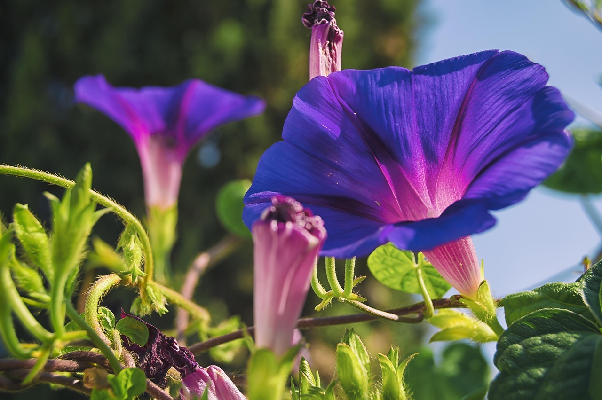
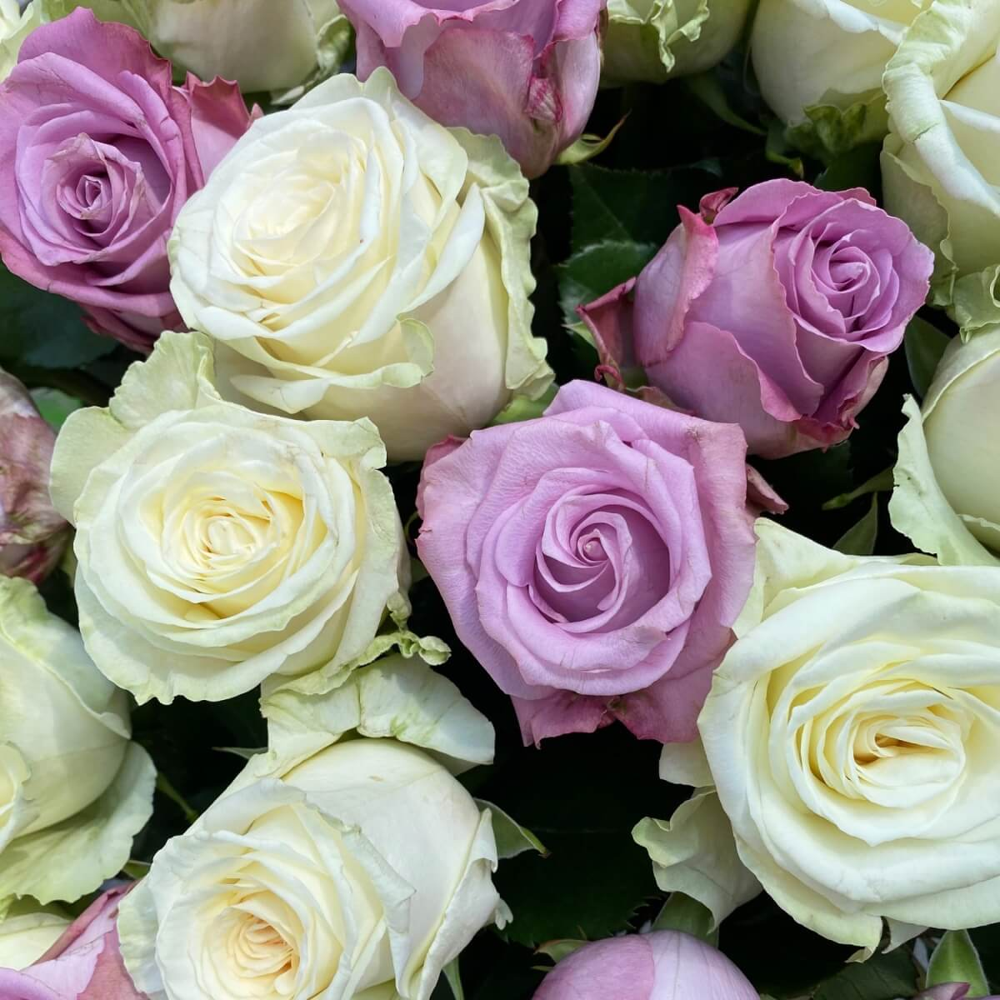

A kerti hajnalka (Ipomoea purpurea) a burgonyavirágúak (Solanales) rendjébe és a szulákfélék (Convolvulaceae) családjába tartozó faj.

Kb. 200 rózsafajt tart számon a tudomány, ezeknek a többsége az északi félgömbre, főleg a mérsékelt égövre jellemző növény, néhány faj Mexikóban, a Fülöp-szigeteken és Etiópiában honos.
